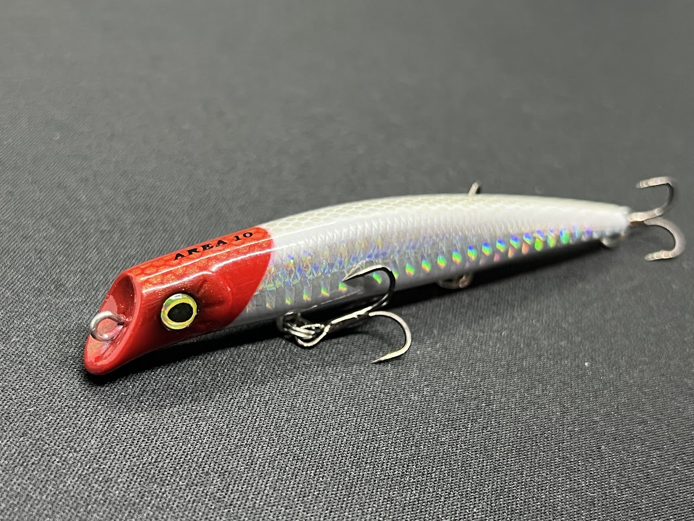
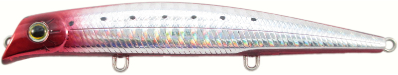
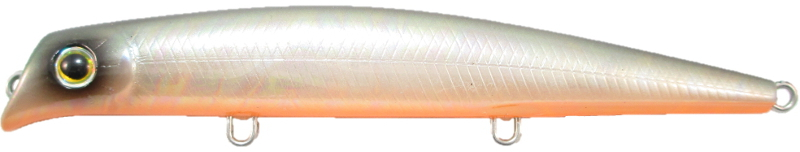
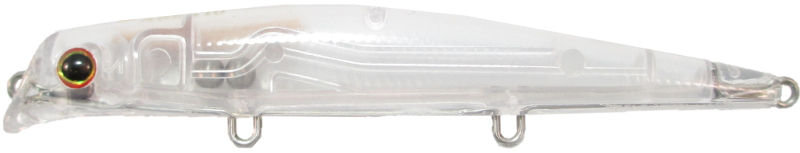
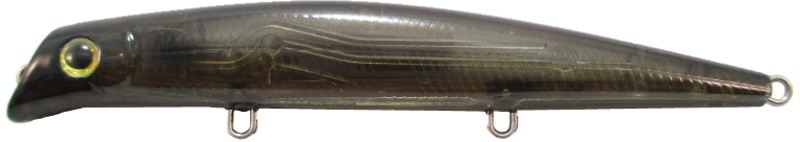

AREA(エリア)10
AREA(エリア)10はGaeaのフローティングミノーです。
バチ抜けといえばこれ。コスパも最強な名作ルアー。通称：エリテン。

スペック
- メーカー
- Gaea
- 長さ
- 100 mm
- 重さ
- 9 g
- フック
- #8×3
- リング
- #2?
- レンジ
- 10-30 cm
- タイプ
- ミノー
- 沈下タイプ
- フローティング
- アクション
- ローリング＋引き波
- ターゲット
- シーバス
- 価格
- 1375円(税込)
エリア10の特徴
バチ抜けルアーの決定版。実績よし！コスパよしの名作ルアー
-
圧倒的なコストパフォーマンス
1200円前後で、シーバスルアーの中では圧倒的にリーズナブル。で初心者からベテランまでに幅広く支持されています。
-
絶妙なレンジキープ力と"動かない"アクション
最大深度は50㎝ですが、水面下5～10㎝のサブサーフェイスを初心者でもオートマチックに引くことができる。
動きすぎないアクションで、バチや小魚を演出します。 -
「バチ抜けパターン」で絶大な信頼と実績
有名プロもバチ抜けといえばこれ！というほど実績のあるルアー。シーバスアングラーは絶対持っている一本。
3本フックにより小さめのシーバスのショートバイトも拾うことができる。また、ワイヤースルーフックを搭載しているため、大物にも対応。
エリア10の使い方・得意な状況
エリア10の得意な状況は絶対に「バチ抜け」シーズンです。
基本的な使い方はただ巻きで、「動かない速度でゆっくり巻く」ことと「引き波を立てて巻く」のがポイントです。
ナチュラルなアクションでシーバスを誘います。
飛距離は20～40ｍと遠投性能は低めなので、中近距離で食わせることに特化しています。
ワンポイント
移動重心システムなので、ウェイトを戻すことを意識しましょう。キャスト後にトゥイッチ（竿先をチョンと動かす）を入れることで、簡単にウェイトを元の位置に戻ります。
フックチューンも釣果を伸ばすコツです。太軸フックに変更でランカーサイズも逃しません。かかり重視にするときは細く刺さりの良いフック(カルティバST-26TN)へ変更するのもオススメ。
人気カラー

ホロレッドバックレッドベリーホログラムで反射アピールとレッドヘッドの弱りベイトを演出できるカラー

グローバチグローカラーとバチイミテートでボヤッと光るバチを演出。

クリアーベイトがわからないときに効果的。バチパターンでもハクパターンでも釣れるカラー！

クリアースモークブラックブラックはシルエットをくっきり出すことができるカラー。ナイトゲームの常夜灯下で無双します。
画像出典:Gaea公式HP